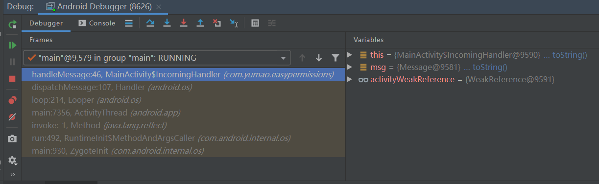

handler源码分析
Handler是面试中的常客。今天我们就来分析一下Handler源码。Handler在Android中的应用主要是线程间通信（本人遇到的情形）， 但线程间通信有Rxjava等优秀的第三方库。所以Handler在平时工作中使用概率其实很低。这篇博客主要是面向面试。
Ps：本次使用的源码是Android-29。
handler的使用
第一种方式：
// 创建Handler对象
handler = new Handler() {
@Override
public void handleMessage(@NonNull Message msg) {
Log.d(TAG, "handleMessage: " + msg.hashCode());
}
};
// 发送消息
handler.sendMessage(Message.obtain());
第二种方式：
// 创建Handler对象
handler = new Handler();
// 发送消息
handler.post(new Runnable() {
@Override
public void run() {
Log.d(TAG, "runMessage: ");
}
});
第一种方式，通过sendMessage()发送消息，覆写Handler类的handleMessage()接受消息。第二种方式，通过post()方法发送消息。 第一种方式，创建了一个匿名内部类，该内部类会持有外部类的引用。导致内存泄漏。可以通过下面的方式来避免这种问题：
static class IncomingHandler extends Handler {
//弱引用 JVM GC时被WeakReference包裹的对象不会阻碍垃圾回收
private final WeakReference<Activity> activityWeakReference;
IncomingHandler(Activity activity) {
activityWeakReference = new WeakReferenc<Activity>(activity);
}
@Override
public void handleMessage(Message msg) {
Activity activity = activityWeakReference.get();
// 一定不要忘了判断非空
if (activity != null) {
Log.d(TAG, "handleMessage: " + msg + activity.getPackageName());
}
}
}
静态内部类并不直接持有外部类的引用，通过WeakReference包裹Activity持有引用。 当JVM GC时，activityWeakReference变量不会导致Activity不可回收。 需要注意的是，如果Activity还被其他变量强引用，Activity是不会被回收的。
// 创建Handler对象
handler = new IncomingHandler(this);
// 发送消息,强烈推荐obtain()获取消息对象，内部有消息缓存池，效率高
handler.sendMessage(Message.obtain());
第二种方式，post()接收一个runnable对象，通过getPostMessage()方法封装成Message对象。之后传递消息的流程和sendMessage()是一致的。
private static Message getPostMessage(Runnable r) {
Message m = Message.obtain();
m.callback = r;
return m;
}
@UnsupportedAppUsage
private static Message getPostMessage(Runnable r, Object token) {
Message m = Message.obtain();
m.obj = token;
m.callback = r;
return m;
}
需要注意的是，使用post方式，handler接受到消息之后，会执行runnable中的代码。不再回调Handler的handleMessage()。 源码分析部分，会再深入理解。另外Handler还提供了removeCallbacks()方法，用来移除在消息队列中等待执行的Runnable。 当页面关闭时，可通过该方法移除不需要执行的Runnable。
handler源码分析
1、构造方法
使用Handler从创建Handler对象开始。我们来看看Handler的构造方法做了那些工作。Handler的构造方法有好几个，通过查看源码， 我们会发现最终都走到了下面这两个方法：
public Handler(@Nullable Handler.Callback callback, boolean async) {
......
mLooper = Looper.myLooper();
if (mLooper == null) {
throw new RuntimeException(
"Can't create handler inside thread " + Thread.currentThread()
+ " that has not called Looper.prepare()");
}
mQueue = mLooper.mQueue;
mCallback = callback;
mAsynchronous = async;
}
public Handler(@android.annotation.NonNull Looper looper,
@Nullable Handler.Callback callback, boolean async) {
// Looper
mLooper = looper;
// MessageQueue 消息队列
mQueue = looper.mQueue;
// 回调，如果不为null，优先于Handler的handleMessage()执行
mCallback = callback;
// 消息处理是否异步
mAsynchronous = async;
}
我们可以发现，构造方法的功能就是初始化mLooper、mQueue、mCallback、mAsynchronous这4个对象。 mCallback类的定义如下：
/**
*实例化Handler时可以使用回调接口，以避免必须实现自己的Handler子类。
*/
public interface Callback {
/**
* @return True 如果不需要进一步处理
*/
boolean handleMessage(@android.annotation.NonNull Message msg);
}
这里我们展开说一下Handler分发消息得逻辑，顺便把前面讲使用post发送runnable部分的坑填上。 Handler内部通过dispatchMessage()分发消息,源码如下：
public void dispatchMessage(@NonNull Message msg) {
//优先级最高的 Message对象自带的runnable对象
if (msg.callback != null) {
handleCallback(msg);
} else {
// 第二优先级，初始化Handler时，可传入该对象。
if (mCallback != null) {
// return true, dispatchMessage方法执行完毕。
// return false，继续调用Handler类的handleMessage()
if (mCallback.handleMessage(msg)) {
return;
}
}
// 优先级最低，Handler类的方法。
handleMessage(msg);
}
}
/**
* 执行runnable
*/
private static void handleCallback(Message message) {
message.callback.run();
}
看到这里，大家肯定会想dispatchMessage是何时调用的呢？这个问题稍后再讲，我们接下来分析一下mAsynchronous变量。 查看Handler构造方法我们发现，我们是无法设置该变量的值，而且Handler类内这个值都设置为false。查看构造方法的源码注释， 有如下内容：
/**
* @param async If true, the handler calls {@link Message#setAsynchronous(boolean)} for
* each {@link Message} that is sent to it or {@link Runnable} that is posted to it.
*/
如果这个值为true，那么Handler在接受到Message对象时，会调用Message对象的setAsynchronous(boolean)方法。 Handler的初始化到这里就结束了，下面我们来讲一讲handler是如何发送消息的。这里讲的比较粗糙的地方，后面会再补充。
2、发送消息
进入Handler的post或者sendMessage()方法，发现他们最后调用了下面两个方法：
public boolean sendMessageAtTime(@NonNull Message msg, long uptimeMillis) {
// 构造方法中初始化的消息队列
MessageQueue queue = mQueue;
if (queue == null) {
RuntimeException e = new RuntimeException(
this + " sendMessageAtTime() called with no mQueue");
Log.w("Looper", e.getMessage(), e);
// 插入消息队列失败
return false;
}
return enqueueMessage(queue, msg, uptimeMillis);
}
private boolean enqueueMessage(@NonNull MessageQueue queue, @NonNull Message msg,
long uptimeMillis) {
// target 负责接收该消息的Handler对象
msg.target = this;
// 系统服务相关，不需要关心
msg.workSourceUid = ThreadLocalWorkSource.getUid();
// 构造方法中初始化，一直为false
if (mAsynchronous) {
msg.setAsynchronous(true);
}
return queue.enqueueMessage(msg, uptimeMillis);
}
再调用MessageQueue类的enqueueMessage(),把消息插入队列中。
boolean enqueueMessage(Message msg, long when) {
......
synchronized (this) {
if (mQuitting) {
// 如果队列在退出中，日志打印警告。
IllegalStateException e = new IllegalStateException(
msg.target +
" sending message to a Handler on a dead thread");
Log.w(TAG, e.getMessage(), e);
msg.recycle();
return false;
}
......
Message p = mMessages;
boolean needWake;
if (p == null || when == 0 || when < p.when) {
// New head, wake up the event queue if blocked.
msg.next = p;
mMessages = msg;
needWake = mBlocked;
} else {
......
Message prev;
for (;;) {
prev = p;
p = p.next;
if (p == null || when < p.when) {
break;
}
if (needWake && p.isAsynchronous()) {
needWake = false;
}
}
msg.next = p;
prev.next = msg;
}
......
}
return true;
}
只保留了关键代码，其他代码用......省略。阅读源码的时候看完发送消息的代码，我还是一头雾水。 队列是如何处理消息的呢？是如何回调Handler的handlerMessage()？我们来继续分析这问题。 这个问题该如何着手呢？在debug代码时，发现handleMessage存在如下调用栈：
点击不同的调用帧，我们发现ActivityThread类的main()有如下代码：
public static void main(String[] args) {
......
Looper.prepareMainLooper();
......
Looper.loop();
throw new RuntimeException("Main thread loop unexpectedly exited");
}
主线程的Looper就是在这里初始化的。这里的main就是我们写java的那个main，是程序的入口。 main()调用了prepareMainLooper和loop方法。我们来看看他们做了哪些工作。
/**
* 将当前线程初始化为循环程序，将其标记为应用程序的主循环程序。
* 应用程序的主循环程序是由Android环境创建的，
* 因此您无需自己调用此函数。
*/
public static void prepareMainLooper() {
// 初始化Looper false 表示该Looper不可退出，一直存在
prepare(false);
synchronized (Looper.class) {
if (sMainLooper != null) {
throw new IllegalStateException
("The main Looper has already been prepared.");
}
// 获取挂载在当前线程的Looper
// prepareMainLooper在主线程调用
sMainLooper = myLooper();
}
}
/**
* 在此线程中运行消息队列。确保调用
* quit（）结束循环。
*/
public static void loop() {
final Looper me = myLooper();
if (me == null) {
throw new RuntimeException
("No Looper; Looper.prepare() wasn't called on this thread.");
}
final MessageQueue queue = me.mQueue;
......
boolean slowDeliveryDetected = false;
// 死循环处理消息
for (; ; ) {
Message msg = queue.next(); // might block
if (msg == null) {
// No message indicates that the message queue is quitting.
return;
}
......
try {
// msg.target 就是发送这个消息的Handler
msg.target.dispatchMessage(msg);
if (observer != null) {
observer.messageDispatched(token, msg);
}
dispatchEnd = needEndTime ? SystemClock.uptimeMillis() : 0;
} catch (Exception exception) {
if (observer != null) {
observer.dispatchingThrewException(token, msg, exception);
}
throw exception;
} finally {
ThreadLocalWorkSource.restore(origWorkSource);
if (traceTag != 0) {
Trace.traceEnd(traceTag);
}
}
.....
// 回收消息
msg.recycleUnchecked();
}
}
到这里，Handler发送消息流程中的各个节点我们都从源码角度分析过了。下面，我们从代码的执行顺序，来梳理一遍整个流程，加深印象：
- 当我们启动App时，JVM启动了一个进程，这个进程中的一个线程会加载ActivityThread类中的Main(), 加载Main()的线程就是我们说的主线程。在Main()中，为主进程初始化了Looper。用来处理消息。
- 接下来的就是调用Handler的构造方法，初始化Handler。
- 当我们通过Handler发送消息(Message类)时，Handler内部最终调用了MessageQueue类的enqueueMessage(),把消息入列。 然后程序启动时初始化的Looper会处理该消息。通过调用Handler的dispatchMessage()分发给消息的处理者。
Message类
Message表示一个消息，该类内部提供了各种属性和方法，用来设置数据，这部分不复杂，自行查看源码即可。下面贴的是稍微复杂些的：
//负责接收该Message的 Handler
Handler target;
//下一个Message对象，通过节点实现链表
Message next;
//Message缓存池，链表结构，保存链表头，就可遍历整个链表
private static Message sPool;
//Message缓存池 内Message的数量
private static int sPoolSize = 0;
//Message缓存池最大容量
private static final int MAX_POOL_SIZE = 50;
MessageQueue类
//如果可以退出消息队列，则为true。
private final boolean mQuitAllowed;
//队列头，基于节点的数据结构。保存队列头，就可遍历整个队列
Message mMessages;
boolean enqueueMessage(Message msg, long when){
......
synchronized (this) {
//true 表示正在退出
if (mQuitting) {
IllegalStateException e = new IllegalStateException(
msg.target + " sending message to a Handler on a dead thread");
Log.w(TAG, e.getMessage(), e);
msg.recycle();
return false;
}
......
Message p = mMessages;
boolean needWake;
if (p == null || when == 0 || when < p.when) {
// 消息插入队列头部
// New head, wake up the event queue if blocked.
msg.next = p;
mMessages = msg;
needWake = mBlocked;
} else {
// 消息插入队列中间。
needWake = mBlocked && p.target == null && msg.isAsynchronous();
Message prev;
for (;;) {
prev = p;//msg 的前一个节点
p = p.next;// msg 的后一个节点
//如果后面没有更多消息 或者 msg执行时间在p之前 跳出
if (p == null || when < p.when) {
break;
}
......
}
msg.next = p;
prev.next = msg;
}
......
}
return true;
}
Message next() {
......
for (;;) {
......
synchronized (this) {
Message prevMsg = null;
Message msg = mMessages;
if (msg != null && msg.target == null) {
// Stalled by a barrier. Find the next asynchronous message in the queue.
do {
prevMsg = msg;
msg = msg.next;
} while (msg != null && !msg.isAsynchronous());
}
if (msg != null) {
if (now < msg.when) {
// Next message is not ready. Set a timeout to wake up when it is ready.
nextPollTimeoutMillis = (int) Math.min(msg.when - now, Integer.MAX_VALUE);
} else {
// Got a message.
mBlocked = false;
if (prevMsg != null) {
prevMsg.next = msg.next;
} else {
mMessages = msg.next;
}
msg.next = null;
......
return msg;
}
} else {
// No more messages.
}
}
......
}
}
mQuitAllowed字段只在初始化主线程MessageQueue时为false。 enqueueMessage()会把Message按时间升序排列。 next()取出队列中的第一个元素。一般情况下遵循先进先出的顺序处理消息。 注意if (msg != null && msg.target == null) 同步屏障。通过postSyncBarrier()发送屏障，屏障是一个msg.target==null的message。 开启了同步屏障，MessageQueue中的异步消息会被先执行。 注意调用removeSyncBarrier()移除屏障。
Looper类 & Handler类
Looper类的核心方法就是prepare() 和 loop()。Handler类主要是构造方法和各种Send方法。这部分相对简单，上面也已经分析过，这里不再展开。
到这里Handler的消息机制，已经分析完毕。当然，源码中还有很多细节，没有展开。如果还有疑问的同学，请自行学习。